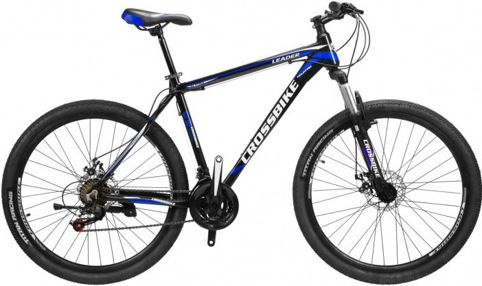
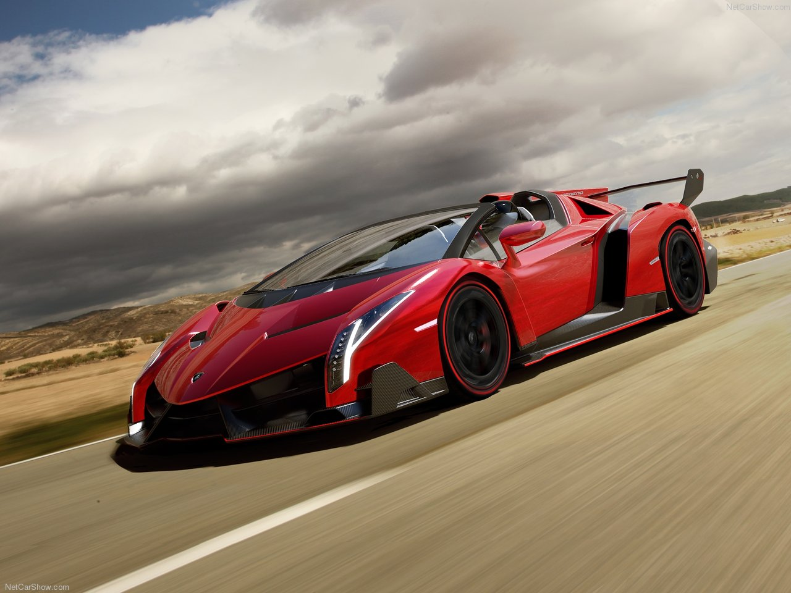
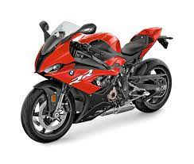

Велосипеди
Велосипе́д (стар. фр. vélocipède, от лат. vēlōx «быстрый» и pes «нога») — колёсное транспортное средство (или спортивный снаряд), приводимое в движение мускульной силой человека через ножные педали или (крайне редко) через ручные рычаги. Наиболее распространены двухколёсные велосипеды, но существуют также конструкции с тремя и более колёсами. Стал использоваться как средство передвижения ещё до широкого распространения городского общественного транспорта, в том числе автобусов, троллейбусов и трамваев. Также популярен среди туристов и в спортивных целях. В современном мире также используют электропривод для увеличения области использования велосипеда.
Машини
Маши́на (від лат. machina, від дав.-гр. μηχανή — «пристрій, засіб, знаряддя») — технічний об'єкт, який складається із взаємопов'язаних функціональних частин (деталей, вузлів, пристроїв, механізмів та ін.), що використовує енергію для виконання покладених на нього функцій. Традиційно, під машиною розуміють технічну систему, яка виконує або допомагає у виконанні якогось виду роботи. Проста машина — механізм, який перетворює напрям або величину сили без споживання енергії.
Мотоцикли
Мотоци́кл (від лат. motor — «той, що приводить в рух» і грец. κύκλος — «коло, колесо») — двоколісний механічний транспортний засіб з боковим причепом або без нього, що відрізняється вертикальною посадкою водія та прямим (безредукторним) управлінням переднім рульовим колесом. До мотоциклів прирівнюються класичні двуколісні мотоцикли, моторолери, триколісні (трицикли), чотириколісні (квадроцикли), снігоходи та інші механічні транспортні засоби, дозволена максимальна маса яких не перевищує 400 кг.[1] Окрім кількості коліс, мотоцикли також розрізняються за своєю конструкцією та розмірами: мопеди, мокіки (мають невеликий розмір двигуна, зазвичай до 50 см³), моторолери або скутери (закритий кузовом двигун розташований під сидінням водія та майданчики для ніг), і власне самі мотоцикли різних типів: класичні, крузери, турери, спортивні, шосейні, кросові, ендуро, чопери.